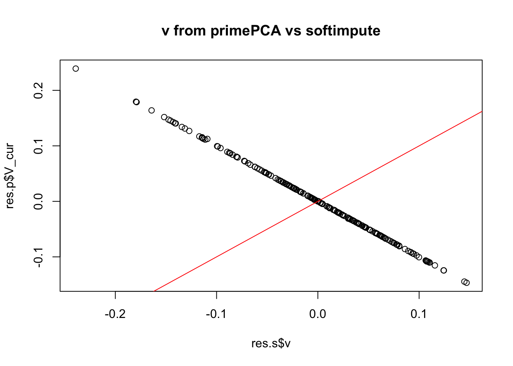
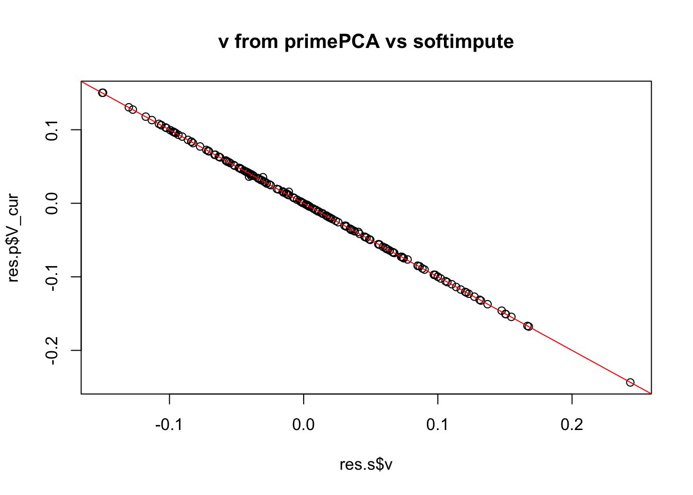

Last updated: 2019-10-20
Checks: 7 0
Knit directory: misc/analysis/
This reproducible R Markdown analysis was created with workflowr (version 1.4.0). The Checks tab describes the reproducibility checks that were applied when the results were created. The Past versions tab lists the development history.
Great! Since the R Markdown file has been committed to the Git repository, you know the exact version of the code that produced these results.
Great job! The global environment was empty. Objects defined in the global environment can affect the analysis in your R Markdown file in unknown ways. For reproduciblity it’s best to always run the code in an empty environment.
The command set.seed(1) was run prior to running the code in the R Markdown file. Setting a seed ensures that any results that rely on randomness, e.g. subsampling or permutations, are reproducible.
Great job! Recording the operating system, R version, and package versions is critical for reproducibility.
Nice! There were no cached chunks for this analysis, so you can be confident that you successfully produced the results during this run.
Great job! Using relative paths to the files within your workflowr project makes it easier to run your code on other machines.
Great! You are using Git for version control. Tracking code development and connecting the code version to the results is critical for reproducibility. The version displayed above was the version of the Git repository at the time these results were generated.
Note that you need to be careful to ensure that all relevant files for the analysis have been committed to Git prior to generating the results (you can use wflow_publish or wflow_git_commit). workflowr only checks the R Markdown file, but you know if there are other scripts or data files that it depends on. Below is the status of the Git repository when the results were generated:
Ignored files:
Ignored: .DS_Store
Ignored: .Rhistory
Ignored: .Rproj.user/
Ignored: analysis/.RData
Ignored: analysis/.Rhistory
Ignored: analysis/ALStruct_cache/
Ignored: data/.Rhistory
Ignored: data/pbmc/
Ignored: docs/figure/.DS_Store
Untracked files:
Untracked: .dropbox
Untracked: Icon
Untracked: analysis/GTEX-cogaps.Rmd
Untracked: analysis/PACS.Rmd
Untracked: analysis/SPCAvRP.rmd
Untracked: analysis/compare-transformed-models.Rmd
Untracked: analysis/cormotif.Rmd
Untracked: analysis/eQTL.perm.rand.pdf
Untracked: analysis/eb_prepilot.Rmd
Untracked: analysis/flash_test_tree.Rmd
Untracked: analysis/ieQTL.perm.rand.pdf
Untracked: analysis/m6amash.Rmd
Untracked: analysis/mash_bhat_z.Rmd
Untracked: analysis/mash_ieqtl_permutations.Rmd
Untracked: analysis/mixsqp.Rmd
Untracked: analysis/nejm.Rmd
Untracked: analysis/normalize.Rmd
Untracked: analysis/pbmc.Rmd
Untracked: analysis/poisson_transform.Rmd
Untracked: analysis/pseudodata.Rmd
Untracked: analysis/sc_bimodal.Rmd
Untracked: analysis/susie_en.Rmd
Untracked: analysis/susie_z_investigate.Rmd
Untracked: analysis/svd-timing.Rmd
Untracked: analysis/temp.Rmd
Untracked: analysis/test-figure/
Untracked: analysis/test.Rmd
Untracked: analysis/test.Rpres
Untracked: analysis/test.md
Untracked: analysis/test_sparse.Rmd
Untracked: analysis/z.txt
Untracked: code/multivariate_testfuncs.R
Untracked: data/4matthew/
Untracked: data/4matthew2/
Untracked: data/E-MTAB-2805.processed.1/
Untracked: data/ENSG00000156738.Sim_Y2.RDS
Untracked: data/GDS5363_full.soft.gz
Untracked: data/GSE41265_allGenesTPM.txt
Untracked: data/Muscle_Skeletal.ACTN3.pm1Mb.RDS
Untracked: data/Thyroid.FMO2.pm1Mb.RDS
Untracked: data/bmass.HaemgenRBC2016.MAF01.Vs2.MergedDataSources.200kRanSubset.ChrBPMAFMarkerZScores.vs1.txt.gz
Untracked: data/bmass.HaemgenRBC2016.Vs2.NewSNPs.ZScores.hclust.vs1.txt
Untracked: data/bmass.HaemgenRBC2016.Vs2.PreviousSNPs.ZScores.hclust.vs1.txt
Untracked: data/eb_prepilot/
Untracked: data/finemap_data/fmo2.sim/b.txt
Untracked: data/finemap_data/fmo2.sim/dap_out.txt
Untracked: data/finemap_data/fmo2.sim/dap_out2.txt
Untracked: data/finemap_data/fmo2.sim/dap_out2_snp.txt
Untracked: data/finemap_data/fmo2.sim/dap_out_snp.txt
Untracked: data/finemap_data/fmo2.sim/data
Untracked: data/finemap_data/fmo2.sim/fmo2.sim.config
Untracked: data/finemap_data/fmo2.sim/fmo2.sim.k
Untracked: data/finemap_data/fmo2.sim/fmo2.sim.k4.config
Untracked: data/finemap_data/fmo2.sim/fmo2.sim.k4.snp
Untracked: data/finemap_data/fmo2.sim/fmo2.sim.ld
Untracked: data/finemap_data/fmo2.sim/fmo2.sim.snp
Untracked: data/finemap_data/fmo2.sim/fmo2.sim.z
Untracked: data/finemap_data/fmo2.sim/pos.txt
Untracked: data/logm.csv
Untracked: data/m.cd.RDS
Untracked: data/m.cdu.old.RDS
Untracked: data/m.new.cd.RDS
Untracked: data/m.old.cd.RDS
Untracked: data/mainbib.bib.old
Untracked: data/mat.csv
Untracked: data/mat.txt
Untracked: data/mat_new.csv
Untracked: data/matrix_lik.rds
Untracked: data/paintor_data/
Untracked: data/temp.txt
Untracked: data/y.txt
Untracked: data/y_f.txt
Untracked: data/zscore_jointLCLs_m6AQTLs_susie_eQTLpruned.rds
Untracked: data/zscore_jointLCLs_random.rds
Untracked: docs/figure/eigen.Rmd/
Untracked: docs/figure/fmo2.sim.Rmd/
Untracked: docs/figure/newVB.elbo.Rmd/
Untracked: docs/figure/poisson_transform.Rmd/
Untracked: docs/figure/rbc_zscore_mash2.Rmd/
Untracked: docs/figure/rbc_zscore_mash2_analysis.Rmd/
Untracked: docs/figure/rbc_zscores.Rmd/
Untracked: docs/figure/susie_en.Rmd/
Untracked: docs/figure/test.Rmd/
Untracked: docs/trend_files/
Untracked: docs/z.txt
Untracked: explore_udi.R
Untracked: output/fit.k10.rds
Untracked: output/fit.varbvs.RDS
Untracked: output/glmnet.fit.RDS
Untracked: output/test.bv.txt
Untracked: output/test.gamma.txt
Untracked: output/test.hyp.txt
Untracked: output/test.log.txt
Untracked: output/test.param.txt
Untracked: output/test2.bv.txt
Untracked: output/test2.gamma.txt
Untracked: output/test2.hyp.txt
Untracked: output/test2.log.txt
Untracked: output/test2.param.txt
Untracked: output/test3.bv.txt
Untracked: output/test3.gamma.txt
Untracked: output/test3.hyp.txt
Untracked: output/test3.log.txt
Untracked: output/test3.param.txt
Untracked: output/test4.bv.txt
Untracked: output/test4.gamma.txt
Untracked: output/test4.hyp.txt
Untracked: output/test4.log.txt
Untracked: output/test4.param.txt
Untracked: output/test5.bv.txt
Untracked: output/test5.gamma.txt
Untracked: output/test5.hyp.txt
Untracked: output/test5.log.txt
Untracked: output/test5.param.txt
Unstaged changes:
Modified: analysis/minque.Rmd
Note that any generated files, e.g. HTML, png, CSS, etc., are not included in this status report because it is ok for generated content to have uncommitted changes.
These are the previous versions of the R Markdown and HTML files. If you’ve configured a remote Git repository (see ?wflow_git_remote), click on the hyperlinks in the table below to view them.
| File | Version | Author | Date | Message |
|---|---|---|---|---|
| Rmd | 8f7b43f | Matthew Stephens | 2019-10-20 | workflowr::wflow_publish(“primepca.Rmd”) |
| html | c4291ae | Matthew Stephens | 2019-10-05 | Build site. |
| Rmd | e5d8b3a | Matthew Stephens | 2019-10-05 | wflow_publish(“primepca.Rmd”) |
| html | e596ca7 | Matthew Stephens | 2019-10-05 | Build site. |
| Rmd | 7be583a | Matthew Stephens | 2019-10-05 | wflow_publish(“primepca.Rmd”) |
I briefly experiment with primePCA package for PCA with missing data and compare its results with those from softImpute. To make the two comparable I run both with no centering (set center=FALSE in primePCA).
library("primePCA")
library("softImpute")Loading required package: MatrixLoaded softImpute 1.4This first try is 50% missingness in every row, a rank 1 matrix:
set.seed(123)
n = 100
p = 200
missprob = rep(0.5,100) #make every row have 50% missing
u = rnorm(n)
v = rnorm(p)
X = u %*% t(v) + rnorm(n*p)
for(i in 1:n){
for(j in 1:p){
if(runif(1)<missprob[i]){X[i,j]=NA}
}
}
res.p = primePCA(X, 1,trace.it=FALSE,center=FALSE)Convergence threshold is hit.res.s = softImpute(X,1)
plot(res.s$v,res.p$V_cur,main="v from primePCA vs softimpute")
abline(a=0,b=1,col=2)
This is the same but missingness varies by row (uniform on 0,1).
set.seed(123)
n = 100
p = 200
missprob = runif(n) #
u = rnorm(n)
v = rnorm(p)
X = u %*% t(v) + rnorm(n*p)
for(i in 1:n){
for(j in 1:p){
if(runif(1)<missprob[i]){X[i,j]=NA}
}
}
res.p = primePCA(X, 1,trace.it=FALSE,center=FALSE)Convergence threshold is hit.res.s = softImpute(X,1)
plot(res.s$v,res.p$V_cur,main="v from primePCA vs softimpute")
abline(a=0,b=-1,col=2)
This example has higher missingness (0.8,1)
set.seed(123)
n = 100
p = 200
missprob = 0.8+ 0.2*runif(n) #at least 80% missing
u = rnorm(n)
v = rnorm(p)
X = u %*% t(v) + rnorm(n*p)
for(i in 1:n){
for(j in 1:p){
if(runif(1)<missprob[i]){X[i,j]=NA}
}
}
res.p = primePCA(X, 1,trace.it=FALSE,center=FALSE)Max iteration number is hit.res.s = softImpute(X,1)
plot(res.s$v,res.p$V_cur,main="v from primePCA vs softimpute")
abline(a=0,b=-1,col=2)
cor(cbind(v,res.p$V_cur,res.s$v)) v
v 1.0000000 -0.9011763 0.9083774
-0.9011763 1.0000000 -0.9911967
0.9083774 -0.9911967 1.0000000…and higher missingness again, (0.9,1). (I increased n so that every column has sufficient non-missing entries):
set.seed(123)
n = 1000
p = 200
missprob = 0.9+ 0.1*runif(n) #at least 90% missing
u = rnorm(n)
v = rnorm(p)
X = u %*% t(v) + rnorm(n*p)
for(i in 1:n){
for(j in 1:p){
if(runif(1)<missprob[i]){X[i,j]=NA}
}
}
res.p = primePCA(X, 1,trace.it=FALSE,center=FALSE)Max iteration number is hit.res.s = softImpute(X,1)
plot(res.s$v,res.p$V_cur,main="v from primePCA vs softimpute")
abline(a=0,b=-1,col=2)
cor(cbind(v,res.p$V_cur,res.s$v)) v
v 1.0000000 0.9878358 -0.9867028
0.9878358 1.0000000 -0.9983583
-0.9867028 -0.9983583 1.0000000Interestingly, the results from trace.it=FALSE in primePCA suggest it is maybe entering an infinite loop in this case. I guess that maybe this is probably because of changes in the rows selected, and indeed was able to avoid it by setting very large thresh_sigma=1e100. (In this case it appears to just filter out the rows with only one entry; in the other case it sometimes filters out one additional row).
sessionInfo()R version 3.6.0 (2019-04-26)
Platform: x86_64-apple-darwin15.6.0 (64-bit)
Running under: macOS Mojave 10.14.4
Matrix products: default
BLAS: /Library/Frameworks/R.framework/Versions/3.6/Resources/lib/libRblas.0.dylib
LAPACK: /Library/Frameworks/R.framework/Versions/3.6/Resources/lib/libRlapack.dylib
locale:
[1] en_US.UTF-8/en_US.UTF-8/en_US.UTF-8/C/en_US.UTF-8/en_US.UTF-8
attached base packages:
[1] stats graphics grDevices utils datasets methods base
other attached packages:
[1] softImpute_1.4 Matrix_1.2-17 primePCA_1.0
loaded via a namespace (and not attached):
[1] workflowr_1.4.0 Rcpp_1.0.2 lattice_0.20-38 digest_0.6.20
[5] rprojroot_1.3-2 MASS_7.3-51.4 grid_3.6.0 backports_1.1.4
[9] git2r_0.26.1 magrittr_1.5 evaluate_0.14 stringi_1.4.3
[13] fs_1.3.1 whisker_0.3-2 rmarkdown_1.14 tools_3.6.0
[17] stringr_1.4.0 glue_1.3.1 xfun_0.8 yaml_2.2.0
[21] compiler_3.6.0 htmltools_0.3.6 knitr_1.23